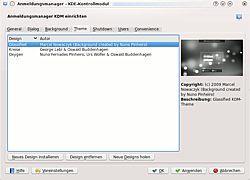

KDM
Hinweis:
Ab Kubuntu 12.10 wird KDM nicht mehr eingesetzt, stattdessen kommen die Neuentwicklungen LightDM und ab 15.04 SDDM zum Einsatz. KDM ist aber bis einschließlich Kubuntu 14.04 in den offiziellen Paketquellen enthalten und kann auf Wunsch nachinstalliert werden.
Dieser Artikel wurde für die folgenden Ubuntu-Versionen getestet:
Ubuntu 14.04 Trusty Tahr
Zum Verständnis dieses Artikels sind folgende Seiten hilfreich:
Der KDM ist der Displaymanager der Desktop-Umgebung KDE. Er stellt einen grafischen Systemanmeldedialog zur Verfügung. Allgemeine Einstellungen des KDM erreicht man je nach Kubuntu Version über die KDE Systemeinstellungen unter "Erweitert -> Login Manager", "Anmeldungsmanager" bzw. "Anmeldebildschirm". Alternativ kommt man an die Einstellungen, wenn nach den Begriffen "Login Manager", "Anmeldungsmanager" bzw. "Anmeldebildschirm" in KRunner gesucht wird. Die KRunner-Variante kann auch notwendig sein, falls die Konfigurationsoptionen von KDM alle ausgegraut sind.
Installation¶
Folgendes Paket muss installiert werden:
kdm (universe)
 mit apturl
mit apturl
Paketliste zum Kopieren:
sudo apt-get install kdm
sudo aptitude install kdm
Einstellungen¶
Der Einstellungen zum Anmeldungsmanager KDM gliedern sich in sieben Reiter, von denen die ersten vier die Optik betreffen, während die letzten drei weitere Einstellungen bieten.
Optik¶
Generell lässt sich die Optik von KDM entweder im Design-Modus oder aber manuell einstellen. Unter dem Menüpunkt "Erscheinungsbild" im Reiter "Erscheinungsbild " bzw. "Allgemein" wechselt man zwischen diesen beiden Varianten, in dem man "Design für den Anmeldungsmanager verwenden" wählt oder nicht.
Aussehen¶

Im Design-Modus ist vor allem der Reiter "Design" für die Optik interessant. Hier kann man zwischen installierten Designs wechseln, neue lokale Designs installieren, nicht mehr gewünschte Designs löschen sowie direkt neue Designs von KDE-Look  holen.
holen.
Unter einigen Versionen werden die Designs nicht korrekt installiert. Damit dies trotzdem funktioniert, startet man den Konfigurationsdialog mit folgendem Befehl aus dem Terminal[2] oder mit KRunner:
kdesudo kcmshell4 kdm
Benutzerbilder¶
Wer die alten Standard-Benutzerbilder (Avatare) in LightDM weiternutzen möchte, muss die vier Bilder aus dem Ordner /usr/share/kde4/apps/kdm/pics/users/ retten. Ist dies nicht mehr möglich, kann man sie auch von Hand aus dem Paket kdm von Kubuntu 12.04 extrahieren.
Manuelle Anpassung¶
Entscheidet man sich nicht für den Design-Modus, können feinere Anpassungen vorgenommen werden. Begrüßungstext, Logo-Bereich, sowie die Position des Begrüßungsfensters – dazu das Ankersymbol mit der Maus verschieben – lassen sich unter "Dialog" einstellen, während sich die Schriftart unter "Erscheinungsbild" bzw. "Allgemein" findet.
Im Reiter Hintergrund kann man sich zwischen einer einfachen Farbe, einem Bild, einer Diashow, oder auch gar keinem Hintergrund entscheiden.
Herunterfahren¶
Hier kann eingestellt werden wer vom eigentlichen Rechner (lokal) und von einem Fremdrechner aus (z.B. über das Netzwerk) berechtigt ist, das System herunterzufahren, sowie welche Befehle hierfür verwendet werden sollen.
Benutzer¶
Hier kann eingestellt werden, welche Benutzer im Anmeldungsfenster dargestellt werden sollen. Genauere Informationen finden sich in der programmeigenen Hilfe. Auch Benutzerbilder und deren Priorität gegenüber Bildern, die unter "Systemeinstellungen -> Persönliche Informationen" eingestellt wurden, können hier festgelegt werden.
Vereinfachung¶
Hier kann man eine automatische Anmeldung an das System für bestimmte Benutzer erlauben und Benutzer für die Anmeldung ohne Passwort auswählen.
Achtung!
Das bedeutet, dass keinerlei Überprüfung bei der Anmeldung der erlaubten Benutzer erfolgt. Dies sollte, wenn überhaupt, nur in sicheren Umgebungen verwendet werden. Für weitere Informationen sollte man unbedingt die Hilfe des Programms lesen!
Wer ein verschlüsseltes Homeverzeichnis verwendet, sollte auf eine automatische Anmeldung verzichten, weil dadurch der Aspekt der Daten-Sicherheit unterlaufen und die Funktionsweise erheblich beeinträchtigt wird.
Erweiterte Einstellungen¶
Manche Einstellungen können nicht mit einem grafischen Programm gemacht werden, sondern müssen durch das Ändern von Konfigurationsdateien durchgeführt werden. Die programmeigene Hilfe beschreibt die möglichen Einstellungen.
 Übersichtsartikel
Übersichtsartikel- Erstellt mit Inyoka
-
 2004 – 2017 ubuntuusers.de • Einige Rechte vorbehalten
2004 – 2017 ubuntuusers.de • Einige Rechte vorbehalten
Lizenz • Kontakt • Datenschutz • Impressum • Serverstatus -
Serverhousing gespendet von